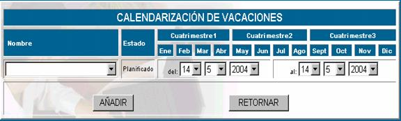

VACACIONES
Según el manual de procedimientos de
administración de dirección y tecnología, la Jefatura US debe elaborar en forma
anual la planificación de vacaciones tomando en cuenta la recomendación de 14
días calendarios de vacación continua.
La pantalla principal de esta opción se
muestra a continuación.
Nombre; aquí se registra el nombre del empleado a quien se le planifica,
realiza o realizó sus vacaciones.
Estado; El estado se refiere a la fase en la cual se encuentra, puede ser
planificado, en realización o realizada.
Fecha inicio; especifica la fecha de inicio de la vacación
Fecha final; especifica la fecha en la
cual concluye su periodo de vacación.
Planificar vacaciones; como se dijo anteriormente esta tarea es función de
la Jefatura de la Unidad de Sistemas, la pantalla principal de esta opción se
muestra a continuación.

Nombre; elija el nombre del empleado a quien se le asignará
vacaciones
Estado; como se está realizando la planificación de
vacaciones el estado se marcará como planificado.
Del - al; en esta parte se especifica la fecha desde la cual se
le dará vacaciones al empleado hasta la fecha limite en la que debe volver.
Esta asignación se realizará en función de las políticas internas de la
empresa, por supuesto si las fechas no son acordes, entonces le aparecerá un mensaje
de error.
Seguimiento; en esta parte se hace la realización de la vacación,
se anota las fechas reales en los cuales se está dando la vacación.
Imprimir; se puede ver un reporte de las vacaciones de cada
empleado.
Imprimir reporte; se puede ver un reporte de la lista general de
vacaciones.